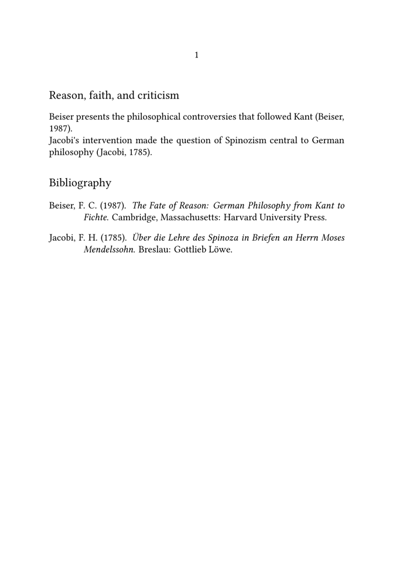

🚧 This page is under construction. Feel free to correct, expand, and improve it; its structure and examples may still change.
Bibliography guides — Guide 1 of 4
← Previous: Bibliography and citations · Current: Guide 1 — Creating a bibliography and citing sources · Next: Guide 2 — Understanding datasets, styles, renderings, selection, and sorting →
Contents
- 1 1. Creating a bibliography and citing sources
- 2 2. Your first working bibliography
- 3 3. How the example works
- 4 4. Understanding a bibliographic record
- 5 5. Moving the records to a .bib file
- 6 6. Tools for maintaining the data
- 7 7. Common problems
- 8 8. What you have learned
- 9 9. Related pages and commands
1. Creating a bibliography and citing sources
This guide shows how to create a first working bibliography, cite records in a ConTeXt document, and place the resulting bibliography in the output.
The aim is deliberately practical. By the end of the guide, you should be able to:
- compile a self-contained bibliography example;
- recognise the category, key, and fields of a bibliographic record;
- load bibliographic data into ConTeXt;
- cite a book or article in running text;
- place a bibliography containing the cited records;
-
move the records from a buffer to an external
.bibfile; - diagnose the most common errors in a minimal bibliography workflow.
This guide concentrates on the first working bibliography.
Datasets, renderings, selection methods, sorting policies, multiple bibliographies, and detailed style questions are introduced in the later guides.
2. Your first working bibliography
The following example is self-contained. The bibliographic records and the ConTeXt source are kept in one file, so the example can be copied and compiled directly.
-
\mainlanguage[en] \setuppapersize[A5] \setupbodyfont [libertinus,10pt] \startbuffer[biblio] @Book{beiser1987, author = {Beiser, Frederick C.}, title = {The Fate of Reason}, subtitle = {German Philosophy from Kant to Fichte}, publisher = {Harvard University Press}, address = {Cambridge, Massachusetts}, year = {1987}, } @Book{jacobi1785, author = {Jacobi, Friedrich Heinrich}, title = {Über die Lehre des Spinoza in Briefen an Herrn Moses Mendelssohn}, publisher = {Gottlieb Löwe}, address = {Breslau}, year = {1785}, } \stopbuffer \usebtxdataset [default] [biblio.buffer] \usebtxdefinitions [apa] \starttext \subject{Reason, faith, and criticism} Beiser presents the philosophical controversies that followed Kant \cite[authoryear][beiser1987]. Jacobi's intervention made the question of Spinozism central to German philosophy \cite[authoryear][jacobi1785]. \subject{Bibliography} \placelistofpublications \stoptext
-

The expected output contains:
- two author–year citations;
- a bibliography containing the two cited records.
Why begin with a buffer?
A buffer keeps the bibliographic data and the ConTeXt source in one file.
This is useful for wiki examples, tests, and bug reports. In a larger project,
an external .bib file is usually easier to maintain.
3. How the example works
The example performs five main operations.
| Element | Role |
|---|---|
\startbuffer[biblio] ... \stopbuffer
|
Stores the bibliographic records inside the example. |
\usebtxdataset[default][biblio.buffer]
|
Loads those records into the dataset named default.
|
\usebtxdefinitions[apa]
|
Loads a bibliographic specification. |
\cite[authoryear][beiser1987]
|
Retrieves and displays one record as an author–year citation. |
\placelistofpublications
|
Places the bibliography at the current position. |
3.1. The bibliographic source
The block:
\startbuffer[biblio] ... \stopbuffer
contains the bibliographic records.
The expression:
biblio.buffer
tells ConTeXt to use the contents of the buffer named biblio as
bibliographic input.
3.2. Loading the records
The command:
\usebtxdataset [default] [biblio.buffer]
loads the records into a dataset named default.
At this stage, the important distinction is:
- the buffer contains the records;
- the dataset is the named collection through which ConTeXt accesses them.
The deeper distinction between bibliographic sources and datasets is developed in Guide 2.
3.3. Loading the specification
The command:
\usebtxdefinitions [apa]
loads the APA bibliography definitions used in this first example.
The bibliographic data and their presentation remain separate:
- the records contain names, titles, dates, and publication information;
- the specification controls how those data are presented.
3.4. Citing a record
A record is cited by its key:
\cite[authoryear][beiser1987]
The first argument requests an author–year citation.
The second argument identifies the record:
beiser1987
The key is not normally printed. ConTeXt retrieves the record and constructs the visible citation from its fields.
Several records can also be cited together:
\cite [authoryear] [beiser1987,jacobi1785]
3.5. Placing the bibliography
The command:
\placelistofpublications
places the bibliography at the current position.
The same structured records therefore serve two purposes:
-
\citeproduces citations; -
\placelistofpublicationsproduces complete bibliography entries.
4. Understanding a bibliographic record
A BibTeX record contains three main elements:
- a category;
- a record key;
- fields.
For example:
@Book{beiser1987, author = {Beiser, Frederick C.}, title = {The Fate of Reason}, subtitle = {German Philosophy from Kant to Fichte}, publisher = {Harvard University Press}, address = {Cambridge, Massachusetts}, year = {1987}, }
| Element | Example | Function |
|---|---|---|
| Category | @Book
|
Identifies the kind of publication. |
| Record key | beiser1987
|
Identifies the record inside the dataset. |
| Fields | author, title, year
|
Store the publication data. |
4.1. Common categories
Common categories include:
@Book @Article @InCollection @InProceedings @PhdThesis @Misc
For example, a journal article may be entered as:
@Article{ameriks1981, author = {Ameriks, Karl}, title = {Kant's Deduction of the Categories}, journal = {The Monist}, year = {1981}, volume = {64}, number = {4}, pages = {451--470}, }
Use a category that corresponds to the publication being described.
4.2. Record keys
A record key should normally be:
- unique inside its dataset;
- stable once it is used;
- free of spaces;
- easy to recognise and type.
A simple author–year pattern is often sufficient:
beiser1987 ameriks1981 jacobi1785
Larger projects may adopt longer or project-specific keys, provided that the system remains consistent.
Key distinction
The key identifies the record for ConTeXt.
It is not normally part of the printed citation or bibliography entry.
4.3. Authors, editors, and translators
A personal name may be written with the family name first:
author = {Beiser, Frederick C.},
Several people must be separated with the word and:
author = {Beiser, Frederick C. and Ameriks, Karl},
Do not separate different authors with commas or semicolons.
Editors and translators use their own fields:
editor = {Wood, Allen W.}, translator = {Di Giovanni, George},
Common mistake
A comma separates parts of one personal name.
The word and separates different people.
4.4. UTF-8 and stable data
Save both the ConTeXt source and the bibliographic data as UTF-8.
Accented letters and non-Latin characters can normally be entered directly:
author = {Jacobi, Friedrich Heinrich}, title = {Über die Lehre des Spinoza},
Bibliographic records should contain stable publication data rather than document-specific layout instructions.
Prefer:
title = {The Fate of Reason},
to a title containing font or layout commands intended for only one document.
The general principle is:
data in the bibliographic source presentation in ConTeXt
5. Moving the records to a .bib file
A buffer is convenient for a self-contained example. For normal work, place
the records in an external .bib file.
5.1. The bibliographic file
Create a first file named:
references.bib
and save it as the bibliography file that will accompany your source file:
@Book{beiser1987, author = {Beiser, Frederick C.}, title = {The Fate of Reason}, subtitle = {German Philosophy from Kant to Fichte}, publisher = {Harvard University Press}, address = {Cambridge, Massachusetts}, year = {1987}, } @Book{jacobi1785, author = {Jacobi, Friedrich Heinrich}, title = {Über die Lehre des Spinoza in Briefen an Herrn Moses Mendelssohn}, publisher = {Gottlieb Löwe}, address = {Breslau}, year = {1785}, } @Article{ameriks1981, author = {Ameriks, Karl}, title = {Kant's Deduction of the Categories}, journal = {The Monist}, year = {1981}, volume = {64}, number = {4}, pages = {451--470}, }
5.2. The ConTeXt source
Create a second file named:
bibliography-example.tex
Save:
\mainlanguage[en] \setupbodyfont [libertinus,10pt] \usebtxdataset [default] % Here, enter the name of the file containing the bibliographic references [references.bib] \usebtxdefinitions [apa] \starttext \subject{Reason, faith, and criticism} Beiser presents the philosophical controversies that followed Kant \cite[authoryear][beiser1987]. Jacobi's intervention made the question of Spinozism central to German philosophy \cite[authoryear][jacobi1785]. Ameriks offers a modern discussion of Kant's categories \cite[authoryear][ameriks1981]. \subject{Bibliography} \placelistofpublications \stoptext
The important difference from the first MWE is:
\usebtxdataset
[default] [references.bib]
The records now come from an external file rather than a buffer.
5.3. Compiling the document
Place both files in the same directory and run:
context bibliography-example.tex
The context runner performs the normal processing required to
resolve collected information.
Expected result
The document contains three author–year citations and a bibliography with the three corresponding entries.
6. Tools for maintaining the data
A bibliography manager such as
JabRef can help create and maintain a large
.bib file.
It can assist with:
- record categories;
- field names;
- citation keys;
- DOI and ISBN data;
- duplicate detection;
- groups and keywords.
The resulting .bib file remains an ordinary UTF-8 text file.
It may also be inspected or edited in Emacs, Vim, Visual Studio Code, Notepad++, or another suitable editor.
Division of labour
A bibliography manager or text editor maintains the data.
ConTeXt selects, formats, and places those data in the document.
7. Common problems
7.1. The citation remains unresolved
Check:
- whether the key is spelled exactly as in the bibliographic source;
- whether the file or buffer has been loaded;
- whether the expected dataset is active;
- whether the document has been compiled again.
For example, these keys are different:
beiser1987 Beiser1987
7.2. The bibliographic file is not found
The command:
\usebtxdataset [default] [references.bib]
expects ConTeXt to find references.bib from the compilation
context.
For the first external-file example, keep both files in the same directory.
If the file is in a subdirectory, use an appropriate relative path:
\usebtxdataset [default] [bib/references.bib]
Complex project paths are discussed in Guide 4.
7.3. The files are not saved as UTF-8
Incorrect encoding may produce malformed characters or parsing errors.
Verify that both the .tex and .bib files are saved
as UTF-8.
7.4. Several authors are separated incorrectly
Incorrect:
author = {Beiser, Frederick C., Ameriks, Karl},
Correct:
author = {Beiser, Frederick C. and Ameriks, Karl},
7.5. The key contains spaces
Avoid:
@Book{Beiser 1987,
Prefer:
@Book{beiser1987,
7.6. A loaded record does not appear
A record may be available in the dataset but absent from the bibliography because it has not been cited or otherwise selected.
In this introductory guide, cite the record explicitly:
\cite[authoryear][beiser1987]
The relation between loaded records, cited records, local selection, and global selection is explained in Guide 2.
7.7. The record category is unsuitable
Use a category that corresponds to the publication:
-
@Bookfor a monograph; -
@Articlefor a journal article; -
@InCollectionfor a chapter in an edited volume.
A record may be read successfully but still be rendered poorly if its category or fields are unsuitable.
8. What you have learned
This guide has introduced the first complete bibliography workflow in ConTeXt.
You have seen how to:
-
store bibliographic records in a buffer or a
.bibfile; - recognise categories, keys, and fields;
-
load the records with
\usebtxdataset; -
load a specification with
\usebtxdefinitions; -
cite a record with
\cite; -
place a bibliography with
\placelistofpublications; - keep publication data separate from their presentation;
- diagnose the most common errors in a minimal example.
Continue with:
Guide 2 — Understanding datasets, styles, renderings, selection, and sorting
The next guide explains how sources, datasets, specifications, citation alternatives, renderings, selection methods, sorting rules, and placement work together.
9. Related pages and commands
- References notes and floats/Bibliography and citations
- Bibliography mkii
- Bibliography-related commands
- \usebtxdataset
- \usebtxdefinitions
- \cite
- \placelistofpublications
Bibliography guides — Guide 1 of 4
← Previous: Bibliography and citations · Current: Guide 1 — Creating a bibliography and citing sources · Next: Guide 2 — Understanding datasets, styles, renderings, selection, and sorting →